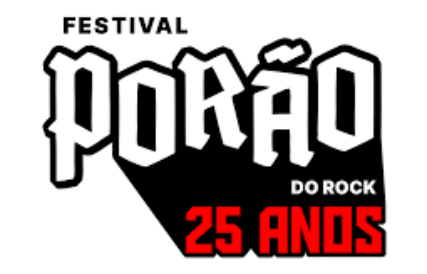

Eventos Próximos
Nesta página, você encontrará uma variedade de
eventos emocionantes que acontecem ao redor do mundo, desde concertos ao vivo e festivais vibrantes até
transmissões online. Quer você esteja procurando um evento local para participar ou queira explorar
celebrações musicais em outras partes do mundo, temos algo para todos.
Junte-se a nós nesta jornada musical e celebre o Dia Internacional da Música com entusiasmo e alegria. Vamos
fazer deste dia uma verdadeira festa para os sentidos, onde a música é a estrela principal!

Eventos Locais e Globais

Festival Porão do Rock
1° de Outubro
R$140,00
ROCK
HEAVY METAL